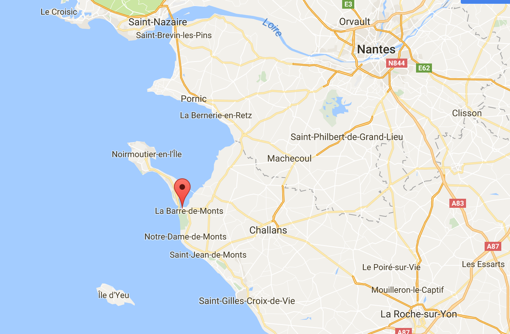

Pour ceux qui le peuvent, nous vous conseillons d’arriver le vendredi soir.
Une fois votre voyage jusqu'à Fromentine organisé, cliquez sur "2/ Traversée vers l'île d'Yeu"
Rejoindre Fromentine - La Barre de Monts
Option (1) En Voiture jusqu'à Fromentine (le plus pratique):
(Cliquez sur "Parkings à Fromentine" pour une liste des garages à Fromentine)

(Vous pouvez cliquer sur la carte)
- Depuis Paris : 450 km, 5h
- Depuis Poitiers : 240 km, 2h40
- Nantes - Fromentine : 66 km, 1h15
- Comptez 30mns de battement pour embarquer sereinement
Option (2) En train jusqu'à Nantes puis bus jusqu'à Fromentine:
- Depuis Paris, 2h10. Trains fréquents
- Les bus sont au départ de la gare SNCF – sortie Sud, (sortez à gauche, plusieurs cars "pays de la Loire" sont garés en face)
- ATTENTION: vous devez réserver le train ET le bus en même temps: tapez sur voyagessncf.com : DÉPART/ARIVÉE : FROMENTINE LA BARRE DE MONT
VoyagesSNCF
Option (3) En avion jusqu'à Nantes puis taxi jusqu'à Fromentine:
Nantes est un aéroport international. Une fois à Nantes vous pouvez prendre un taxi pour faire Nantes-Fromentine
Taxis Montois, réservez au 02.51.68.52.83
Pour 1 taxi sur réservation, jusqu'à 8 passagers:
- Nantes Gare/Fromentine:
- Du Lundi au Samedi inclus, entre 7h00 et 19h00 -- 110€
- Dimanche, jours fériés, et entre 19h00 et 7h00 -- 150€
- Nantes Aéroport/ Fromentine:
- Du Lundi au Samedi inclus, entre 7h00 et 19h00 -- 100€
- Dimanche, jours fériés, et entre 19h00 et 7h00 -- 140€
Vous pouvez même rejoindre l'île d'Yeu depuis l'aéroport de Nantes (ou autres) via des petits avions. Il faut vous organiser avec l'aérodrome de l'île. 02.51.58.38.22
Site
Pour ceux qui le peuvent, nous vous conseillons d’arriver le vendredi soir.
Fromentine/Yeu en bateau
Les deux billetteries YEU CONTINENT et COMPAGNIE VENDEENNE sont maintenant ouvertes !
Voici les horaires des deux compagnies
1) YEU CONTINENT La traversée dure 30 minutes:
le Vendredi 18 Mai
Départ de Fromentine : 8h30, 10h30, 19h, 20h et 21h45
le Samedi 19 Mai
Départ de Fromentine : 9h00, 10h00, 11h30, 12h30 et 18h30
2) COMPAGNIE VENDEENNE La traversée dure 45 minutes:
le Vendredi 18 Mai
Départ de Fromentine : 9h45, 11h30, 16h00, 17h15, 18h30, 19h30 et 21h00
le Samedi 19 Mai
Départ de Fromentine : 9h00, 10h00, 11h30, 12h30, 16h45 et 18h30
3) RETOUR : Yeu/Fromentine
Le Lundi 21 mai 2018
Yeu Continent : 8h, 9h, 11h45, 12h45, 18h30, 19h45, 20h30
Compagnie vendéenne : 8h30, 11h00, 12h00, 12h30, 13h30, 17h00, 17h30, et 19h00
Fromentine/Yeu en hélicoptère
100€ Aller / 200€ Aller-Retour
Possibilités de laisser sa voiture sur le parking de l'héliport gratuitement ou qu'un garage vienne la chercher et vous la rapporte si vous revenez en hélico (supplément 19€)
Site
Nous devrions avoir tous les horaires à la Toussaint, cependant nous vous conseillons dès à présent de réserver votre hébergement
Nos solutions hébergement
Dès que nous aurons tous les horaires nous vous enverrons un mail !
Les parkings Blanchard et Bodin sont les plus proches de l'embarcadère
Les parkings Martineau et Alizés ont des minibus gratuits pour vous y accompagner et venir vous chercher au retour.
Nous avons des tarifs avantageux avec le parking Bodin. Envoyez un mail à fetj19052018@gmail.com en précisant le jour/heure d'arrivée à Fromentine et l'heure du bateau. Veuillez nous donner ces informations pour l'aller ET le retour svp.
Parking Bodin
5, rue des Pins
85550, Fromentine
02.51.68.50.63
Site
Parking Blanchard
4, rue du Petit Bois
85550, Fromentine
02.51.68.54.17
Site
Parking Martineau
Z.A. Le Rampy
85550, Fromentine
02.51.68.51.62
Site
Alizés Parking
Z.A. Le Rampy
85550, Fromentine
02.51.68.21.22
Site